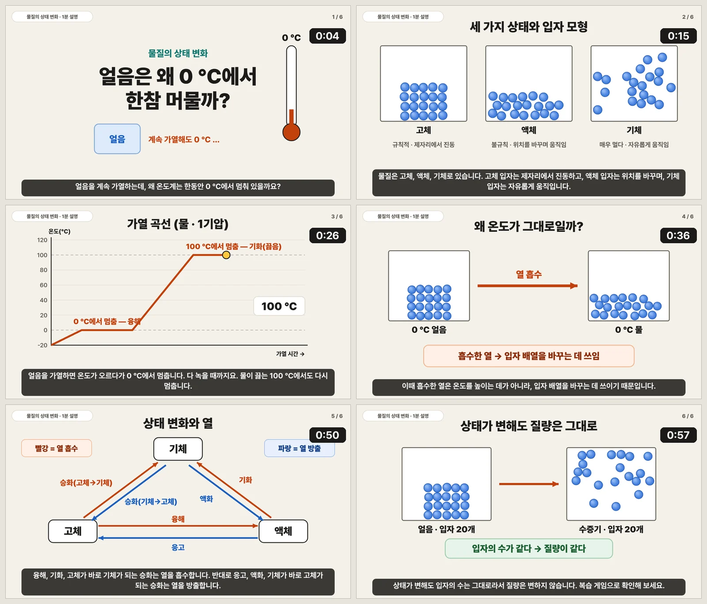

설명 영상과 내레이션
단원을 1분에 정리하는 설명 영상을 장면 구성·대본 → 코드로 만든 장면 → 영상 파일 → 운영체제에 들어 있는 무료 음성으로 내레이션 순서로 만듭니다.
- 목표
- «얼음은 왜 0 °C에서 한참 머물까?»로 시작하는 1분 설명 영상(1280×720)과 내레이션을 만든다 (예시: 중학교 과학 — 물질의 상태 변화, P1 계획표의 8차시 단원 정리)
- 준비물
- P1에서 만든
물질의상태변화/04_설명영상폴더 · (있으면) 14차시에서 설치한 HyperFrames - 결과물
대본.md·scenes.html(장면) ·설명영상.mp4·narration.wav(내레이션) · 합칠 수 있으면설명영상_내레이션.mp4- 주의
- 유료 음성 서비스는 쓰지 않기 · 목소리는 운영체제 음성이나 교사 본인 목소리만 · 새 프로그램 설치는 묻고 나서
영상 만들기는 14차시, 내레이션은 17차시에서 따로 해 보았습니다. 여기서는 둘을 한 흐름으로 잇습니다. 핵심은 대본을 먼저 확정하는 것입니다. 장면별 화면과 내레이션을 적은 대본이 정해지면 장면·자막·소리가 모두 그 표를 따르므로, 과학 내용 검수도 대본 한 곳에서 끝납니다. 장면은 웹페이지(HTML)로 만들어 앱 안 브라우저 창에서 바로 보며 고치고, 그 장면을 영상 파일로 바꿉니다. 내레이션은 윈도우·맥에 들어 있는 한국어 음성으로 무료로 만듭니다.
먼저 볼 영상

1 준비
- P1에서 만든
물질의상태변화/04_설명영상폴더가 있는지 봅니다. - 14차시에서 HyperFrames를 설치했다면 그대로 씁니다. 하지 않았어도 됩니다. 5단계에서 클로드가 이 컴퓨터에 있는 도구를 먼저 확인합니다.
- 학교 PC는 프로그램 설치가 막혀 있을 수 있습니다. 그럴 때는 4단계(장면)까지 학교 PC에서 하고, 영상 파일 만들기와 합치기는 개인 노트북에서 합니다.
2 따라 하기
번호 순서대로 진행합니다. 프롬프트가 필요한 단계에는 바로 아래에 복사 단추가 있습니다.
- Code 탭에서 환경은 Local 맨 위 항목, 폴더는 Open folder… 로
04_설명영상, 권한 모드는 Manual 을 고릅니다. 파일을 만들거나 프로그램을 실행하기 전에 클로드가 묻습니다. - 대본을 먼저 받습니다.
중학교 과학 '물질의 상태 변화' 단원 정리용 1분 설명 영상을 만들려고 합니다. 먼저 장면 구성과 대본만 써서 대본.md 로 저장해 주세요. 영상은 아직 만들지 마세요. 조건 - 길이 60초, 장면 6개 안팎, 화면 1280×720 - 첫 장면은 질문으로 시작: «얼음을 계속 가열하는데, 왜 한동안 0 °C에 머물까?» - 다룰 내용: 세 가지 상태의 입자 운동, 가열 곡선(1기압 물 0 °C·100 °C), 흡수한 열이 입자 배열을 바꾸는 데 쓰임, 상태 변화 6가지와 열의 흡수·방출, 상태가 변해도 질량은 그대로 - 승화는 방향을 함께 말하기 (예: «고체가 바로 기체가 되는 승화») - 표: 장면 | 시간 | 화면에 보일 것 | 내레이션 - 내레이션은 장면 길이 1초에 5글자 안팎으로 (읽는 속도에 맞게), 중학생이 듣고 바로 알 쉬운 말로 - 마지막에 대본 내용을 스스로 검토한 결과를 적기
«1초에 5글자 안팎»이 중요합니다. 대본이 길면 내레이션이 장면을 넘쳐 화면과 소리가 어긋납니다. 첫 장면을 질문으로 시작하면 학생이 영상 끝까지 답을 찾으며 봅니다.
캡처 넣을 곳 · P5-1
대본 표 (따라 하기 2번).- 대본.md 표 전체가 보이게
- 빨간 상자: 첫 장면의 질문
- 대본을 교사가 직접 읽어 봅니다. 소리 내어 읽으며 장면 시간 안에 끝나는지, 과학 내용이 맞는지 봅니다. 고칠 곳은
대본.md를 직접 고치거나 말로 요청합니다. 예: «4번 장면 내레이션을 한 문장으로 줄여 주세요» - 장면을 웹페이지로 만듭니다.
대본.md 대로 장면을 웹페이지로 만들어 주세요. - scenes.html 한 파일, 1280×720 화면, 외부 라이브러리·인터넷 없이 - 화면 아래에 내레이션을 자막으로 (소리가 없어도 이해되게) - 재생·멈춤 단추와 시간 슬라이더 - 같은 시각에는 언제나 같은 그림이 나오게 (나중에 한 장씩 찍어 영상으로 만들 수 있게) - 입자의 크기와 개수는 모든 장면에서 같게, 열 흡수는 빨강·방출은 파랑 (P2 슬라이드와 같게) 다 만들면 앱 안 브라우저 창에서 열어 장면마다 한 번씩 확인해 주세요.
«같은 시각에는 언제나 같은 그림»은 영상으로 바꾸기 위한 조건입니다. 장면을 시간에 따라 정해진 대로 그리게 해 두면, 1초에 24장처럼 한 장씩 찍어 이어 붙이거나 HyperFrames 같은 도구로 렌더링할 수 있습니다.
캡처 넣을 곳 · P5-2
앱 안 브라우저 창의 장면 (따라 하기 4번).- 장면 아래 자막과 재생 단추·시간 슬라이더가 보이게
- 영상 파일로 만듭니다. 설치하자는 말이 나오면 무엇을 왜 설치하는지 읽고 정합니다.
scenes.html 을 1280×720, 60초 MP4 영상(설명영상.mp4)으로 만들어 주세요. - 이 컴퓨터에 영상을 만들 수 있는 도구가 무엇이 있는지 먼저 확인하고 방법을 알려 주세요 - 14차시에서 설치한 HyperFrames 가 있으면 그것을 써도 됩니다 - 새 프로그램을 설치해야 하면, 설치하기 전에 무엇을 왜 설치하는지 말하고 제 답을 기다려 주세요 - 파일 크기는 10 MB 이하로
- 내레이션을 만듭니다.
대본.md 의 내레이션을 이 컴퓨터에 들어 있는 한국어 음성으로 읽어 narration.wav 로 만들어 주세요. - 윈도우는 Windows PowerShell(powershell.exe)의 음성 기능(System.Speech), 맥은 say 명령처럼 운영체제에 들어 있는 무료 방법만 쓰기 - 먼저 설치된 한국어 음성 목록을 보여 주고, 한국어 음성이 없으면 멈추고 알려 주기 - 장면마다 내레이션이 장면 시간 안에 끝나는지 확인하고, 넘치는 장면이 있으면 알려 주기 - 영상과 합칠 수 있으면 설명영상_내레이션.mp4 로 합치고, 합칠 도구가 없으면 설치하기 전에 물어보기
운영체제에 들어 있는 음성은 무료이고 인터넷으로 글을 보내지 않습니다. 목소리가 기계적이라면 교사가 대본을 직접 읽어 녹음해도 됩니다. 더 자연스러운 무료 음성(오픈소스 TTS)은 17차시를 봅니다. 학생이나 동료의 목소리는 동의 없이 쓰지 않습니다.
캡처 넣을 곳 · P5-3
한국어 음성 목록 (따라 하기 6번).- 빨간 상자: 한국어 음성 이름
- 장면별로 내레이션이 시간 안에 끝나는지 적은 부분
- 완성된 영상을 처음부터 끝까지 봅니다. 소리와 자막이 맞는지, 장면이 넘어갈 때 내레이션이 끊기지 않는지 봅니다. P6에서 이 영상을 허브 페이지로 묶습니다.
3 결과 예시

예시 영상 내려받기 (MP4) → · 장면 웹페이지 열어 보기 → · 대본 →
scenes.html 이 시각마다 정해진 그림을 그리게 해 두고, 브라우저 자동화 도구(Playwright)로 1/24초마다 화면을 PNG로 저장한 1,440장을 ffmpeg로 이어 H.264 MP4(1280×720, 60초, 약 1.9 MB)로 만들었습니다. HyperFrames로 만든 것은 아닙니다. 이 영상을 만든 컴퓨터(리눅스)에는 한국어 음성이 없어 내레이션은 넣지 않았고, 대신 대본을 화면 아래 자막으로 넣었습니다(소리 없음). 선생님 PC에서 프롬프트 4로 내레이션을 만들면 소리가 들어갑니다. 클로드 코드의 실제 결과는 장면 구성과 그림이 매번 다릅니다.4 검증 포인트
② 읽는 속도 — 내레이션이 장면 시간 안에 끝나는지, 너무 빨라 알아듣기 어렵지 않은지 직접 들어 봅니다.
③ 자막과 소리 — 자막 글과 내레이션이 같은지 봅니다. 대본을 고친 뒤 한쪽만 바뀌는 일이 잦습니다.
④ 그림 — 입자의 크기·개수가 모든 장면에서 같은지, 흡수 빨강·방출 파랑이 P2~P4와 같은지 봅니다.
⑤ 길이와 크기 — 1분 안팎인지, 파일 크기가 알맞은지 봅니다. GitHub 웹 화면으로 올리는 파일은 한 파일에 25MiB까지입니다(8차시).
⑥ 목소리 — 운영체제 음성이나 교사 본인 목소리만 썼는지 봅니다. 학생·동료 목소리는 동의 없이 쓰지 않습니다.
⑦ 설치한 프로그램 — 이번에 무엇을 설치했는지 대화 기록에서 확인해 적어 둡니다. 학교 PC라면 정보 담당 선생님께 알립니다.
5 다른 단원에 적용하기
따라 하기 2단계 프롬프트 1 대신 아래 교과 단원 프롬프트를 씁니다. 4단계는 아래 공통 프롬프트로 바꿔 쓰고, 5·6단계(영상 파일, 내레이션) 프롬프트는 그대로 씁니다. 숫자·연도·인용이 들어가는 단원은 교사가 확인한 자료 파일을 폴더에 함께 넣어 줍니다.
대본.md 대로 장면을 웹페이지로 만들어 주세요. - scenes.html 한 파일, 1280×720 화면, 외부 라이브러리·인터넷 없이 - 화면 아래에 내레이션을 자막으로 (소리가 없어도 이해되게) - 재생·멈춤 단추와 시간 슬라이더 - 같은 시각에는 언제나 같은 그림이 나오게 (나중에 한 장씩 찍어 영상으로 만들 수 있게) - 같은 뜻에는 같은 색, 글자는 교실 TV에서 읽히게 크게 다 만들면 앱 안 브라우저 창에서 열어 장면마다 한 번씩 확인해 주세요.
국어비유와 상징첫 질문: «시간은 화살이다»는 왜 은유일까?
중학교 국어 '비유와 상징' 단원 정리용 1분 설명 영상을 만들려고 합니다. 먼저 장면 구성과 대본만 써서 대본.md 로 저장해 주세요. 영상은 아직 만들지 마세요. 조건 - 길이 60초, 장면 6개 안팎, 화면 1280×720 - 첫 장면은 질문으로 시작: «시간은 화살이다»는 왜 은유일까? - 다룰 내용: 원관념과 보조관념, 직유와 은유의 차이(연결하는 말), 의인과 상징의 예, 비유를 쓰면 생기는 효과 - 시는 교사가 첨부한 작품(교사가 쓴 시나 저작권이 끝난 작품)만 쓰고, 다른 작품을 지어내거나 인용하지 않기 - 표: 장면 | 시간 | 화면에 보일 것 | 내레이션 - 내레이션은 장면 길이 1초에 5글자 안팎으로 (읽는 속도에 맞게), 중학생이 듣고 바로 알 쉬운 말로 - 마지막에 대본 내용을 스스로 검토한 결과를 적기
수학일차함수와 그래프첫 질문: y = 2x 와 y = 3x, 어느 그래프가 더 가파를까?
중학교 수학 '일차함수와 그래프' 단원 정리용 1분 설명 영상을 만들려고 합니다. 먼저 장면 구성과 대본만 써서 대본.md 로 저장해 주세요. 영상은 아직 만들지 마세요. 조건 - 길이 60초, 장면 6개 안팎, 화면 1280×720 - 첫 장면은 질문으로 시작: «y = 2x 와 y = 3x, 어느 그래프가 더 가파를까?» - 다룰 내용: 일차함수의 식, 기울기의 뜻, 기울기의 부호와 그래프 모양, y절편이 바뀌면 그래프가 위아래로 평행이동 - 식과 그래프 표기는 교과서처럼 쓰기 (예: y = 2x − 1), 계산값은 스스로 검산하기 - 표: 장면 | 시간 | 화면에 보일 것 | 내레이션 - 내레이션은 장면 길이 1초에 5글자 안팎으로 (읽는 속도에 맞게), 중학생이 듣고 바로 알 쉬운 말로 - 마지막에 대본 내용을 스스로 검토한 결과를 적기
영어과거 시제로 경험 말하기첫 질문: go 의 과거형은 왜 goed 가 아닐까?
중학교 영어 '과거 시제로 경험 말하기' 단원 정리용 1분 설명 영상을 만들려고 합니다. 먼저 장면 구성과 대본만 써서 대본.md 로 저장해 주세요. 영상은 아직 만들지 마세요. 조건 - 길이 60초, 장면 6개 안팎, 화면 1280×720 - 첫 장면은 질문으로 시작: «go 의 과거형은 왜 goed 가 아닐까?» - 다룰 내용: 과거 시제를 쓰는 때, 규칙 동사(-ed), 불규칙 동사의 예, did 를 쓰는 의문문과 부정문 - 예문은 교사가 첨부한 예문.txt 와 교과서 수준 어휘로, 불규칙 동사는 첨부한 동사표.csv 기준으로 - 표: 장면 | 시간 | 화면에 보일 것 | 내레이션 - 내레이션은 장면 길이 1초에 5글자 안팎으로 (읽는 속도에 맞게), 중학생이 듣고 바로 알 쉬운 말로 - 마지막에 대본 내용을 스스로 검토한 결과를 적기
과학기체의 압력·온도와 부피첫 질문: 높은 산에 올라가면 과자 봉지가 왜 빵빵해질까?
중학교 과학 '기체의 압력·온도와 부피' 단원 정리용 1분 설명 영상을 만들려고 합니다. 먼저 장면 구성과 대본만 써서 대본.md 로 저장해 주세요. 영상은 아직 만들지 마세요. 조건 - 길이 60초, 장면 6개 안팎, 화면 1280×720 - 첫 장면은 질문으로 시작: «높은 산에 올라가면 과자 봉지가 왜 빵빵해질까?» - 다룰 내용: 기체 압력의 입자 모형, 바깥 압력이 낮아지면 부피가 커짐 (보일 법칙), 온도가 높아지면 부피가 커짐 (샤를 법칙), 두 법칙의 조건 - 법칙에는 «온도 일정», «압력 일정» 조건을 언제나 함께 적기 - 표: 장면 | 시간 | 화면에 보일 것 | 내레이션 - 내레이션은 장면 길이 1초에 5글자 안팎으로 (읽는 속도에 맞게), 중학생이 듣고 바로 알 쉬운 말로 - 마지막에 대본 내용을 스스로 검토한 결과를 적기
사회기후와 생활첫 질문: 사막의 집은 왜 벽이 두껍고 창이 작을까?
중학교 사회 '기후와 생활' 단원 정리용 1분 설명 영상을 만들려고 합니다. 먼저 장면 구성과 대본만 써서 대본.md 로 저장해 주세요. 영상은 아직 만들지 마세요. 조건 - 길이 60초, 장면 6개 안팎, 화면 1280×720 - 첫 장면은 질문으로 시작: «사막의 집은 왜 벽이 두껍고 창이 작을까?» - 다룰 내용: 기온과 강수량으로 기후 나누기, 건조 기후 지역의 생활, 열대 기후 지역과 비교, 기후 그래프 읽는 법 - 기온·강수량 숫자는 교사가 첨부한 기후자료.csv 만 쓰고 지어내지 않기, 출처를 함께 적기 - 표: 장면 | 시간 | 화면에 보일 것 | 내레이션 - 내레이션은 장면 길이 1초에 5글자 안팎으로 (읽는 속도에 맞게), 중학생이 듣고 바로 알 쉬운 말로 - 마지막에 대본 내용을 스스로 검토한 결과를 적기
역사조선의 건국과 발전첫 질문: 조선은 어떻게 나라의 기틀을 다졌을까?
중학교 역사 '조선의 건국과 발전' 단원 정리용 1분 설명 영상을 만들려고 합니다. 먼저 장면 구성과 대본만 써서 대본.md 로 저장해 주세요. 영상은 아직 만들지 마세요. 조건 - 길이 60초, 장면 6개 안팎, 화면 1280×720 - 첫 장면은 질문으로 시작: «조선은 어떻게 나라의 기틀을 다졌을까?» - 다룰 내용: 건국 과정, 통치 체제 정비, 문화 발전, 첨부 연표의 사건만 - 연도·인물·사건은 교사가 첨부한 연표.csv 와 교과서 기준으로만 쓰고, 없는 사실을 지어내지 않기 - 표: 장면 | 시간 | 화면에 보일 것 | 내레이션 - 내레이션은 장면 길이 1초에 5글자 안팎으로 (읽는 속도에 맞게), 중학생이 듣고 바로 알 쉬운 말로 - 마지막에 대본 내용을 스스로 검토한 결과를 적기
도덕갈등의 평화적 해결첫 질문: «너 때문에»를 «나는 ~해서 속상해»로 바꾸면 무엇이 달라질까?
중학교 도덕 '갈등의 평화적 해결' 단원 정리용 1분 설명 영상을 만들려고 합니다. 먼저 장면 구성과 대본만 써서 대본.md 로 저장해 주세요. 영상은 아직 만들지 마세요. 조건 - 길이 60초, 장면 6개 안팎, 화면 1280×720 - 첫 장면은 질문으로 시작: «너 때문에»를 «나는 ~해서 속상해»로 바꾸면 무엇이 달라질까? - 다룰 내용: 갈등이 생기는 까닭, 공감하며 듣기, 나-전달법, 평화적 해결 방법 - 사례는 교사가 쓴 가상 사례만 쓰고, 실제 학생·학교를 떠올리게 하는 이름이나 설정을 넣지 않기 - 표: 장면 | 시간 | 화면에 보일 것 | 내레이션 - 내레이션은 장면 길이 1초에 5글자 안팎으로 (읽는 속도에 맞게), 중학생이 듣고 바로 알 쉬운 말로 - 마지막에 대본 내용을 스스로 검토한 결과를 적기
기술·가정청소년의 영양과 식사첫 질문: 균형 잡힌 한 끼는 어떻게 짤까?
중학교 기술·가정 '청소년의 영양과 식사' 단원 정리용 1분 설명 영상을 만들려고 합니다. 먼저 장면 구성과 대본만 써서 대본.md 로 저장해 주세요. 영상은 아직 만들지 마세요. 조건 - 길이 60초, 장면 6개 안팎, 화면 1280×720 - 첫 장면은 질문으로 시작: «균형 잡힌 한 끼는 어떻게 짤까?» - 다룰 내용: 5대 영양소, 청소년기에 특히 챙길 영양소, 식품 구성 자전거, 한 끼 식단 예 - 영양 수치는 교사가 첨부한 자료만 쓰고 출처를 밝히기, 의학적 조언처럼 쓰지 않기 - 표: 장면 | 시간 | 화면에 보일 것 | 내레이션 - 내레이션은 장면 길이 1초에 5글자 안팎으로 (읽는 속도에 맞게), 중학생이 듣고 바로 알 쉬운 말로 - 마지막에 대본 내용을 스스로 검토한 결과를 적기
정보정렬 알고리즘첫 질문: 카드 10장을 선택 정렬하면 몇 번 비교할까?
중학교 정보 '정렬 알고리즘' 단원 정리용 1분 설명 영상을 만들려고 합니다. 먼저 장면 구성과 대본만 써서 대본.md 로 저장해 주세요. 영상은 아직 만들지 마세요. 조건 - 길이 60초, 장면 6개 안팎, 화면 1280×720 - 첫 장면은 질문으로 시작: «카드 10장을 선택 정렬하면 몇 번 비교할까?» - 다룰 내용: 알고리즘의 뜻, 선택 정렬의 과정, 버블 정렬의 과정, 비교 횟수 비교 (선택 정렬 10장 → 45번) - 알고리즘 이름과 과정은 교과서 용어로, 비교 횟수는 직접 세어 검산하기 - 표: 장면 | 시간 | 화면에 보일 것 | 내레이션 - 내레이션은 장면 길이 1초에 5글자 안팎으로 (읽는 속도에 맞게), 중학생이 듣고 바로 알 쉬운 말로 - 마지막에 대본 내용을 스스로 검토한 결과를 적기
음악우리 음악의 장단첫 질문: 같은 민요도 장단이 바뀌면 느낌이 어떻게 달라질까?
중학교 음악 '우리 음악의 장단' 단원 정리용 1분 설명 영상을 만들려고 합니다. 먼저 장면 구성과 대본만 써서 대본.md 로 저장해 주세요. 영상은 아직 만들지 마세요. 조건 - 길이 60초, 장면 6개 안팎, 화면 1280×720 - 첫 장면은 질문으로 시작: «같은 민요도 장단이 바뀌면 느낌이 어떻게 달라질까?» - 다룰 내용: 장단의 뜻, 장단표의 장단 비교, 장구 구음, 민요에 장단 맞추기 - 장단 이름·박·장구 구음은 교사가 첨부한 장단표.txt 만 쓰고 지어내지 않기, 음원은 넣지 않기 - 표: 장면 | 시간 | 화면에 보일 것 | 내레이션 - 내레이션은 장면 길이 1초에 5글자 안팎으로 (읽는 속도에 맞게), 중학생이 듣고 바로 알 쉬운 말로 - 마지막에 대본 내용을 스스로 검토한 결과를 적기
미술색의 3요소와 배색첫 질문: 보색을 나란히 놓으면 왜 더 또렷해 보일까?
중학교 미술 '색의 3요소와 배색' 단원 정리용 1분 설명 영상을 만들려고 합니다. 먼저 장면 구성과 대본만 써서 대본.md 로 저장해 주세요. 영상은 아직 만들지 마세요. 조건 - 길이 60초, 장면 6개 안팎, 화면 1280×720 - 첫 장면은 질문으로 시작: «보색을 나란히 놓으면 왜 더 또렷해 보일까?» - 다룰 내용: 색의 3요소, 색상환, 보색 대비, 배색의 느낌 - 화면의 색과 물감 색이 다를 수 있다고 밝히기, 다른 사람의 작품 이미지는 넣지 않기 - 표: 장면 | 시간 | 화면에 보일 것 | 내레이션 - 내레이션은 장면 길이 1초에 5글자 안팎으로 (읽는 속도에 맞게), 중학생이 듣고 바로 알 쉬운 말로 - 마지막에 대본 내용을 스스로 검토한 결과를 적기
체육건강 체력과 운동 강도첫 질문: 운동할 때 심박수는 어디까지 올리면 좋을까?
중학교 체육 '건강 체력과 운동 강도' 단원 정리용 1분 설명 영상을 만들려고 합니다. 먼저 장면 구성과 대본만 써서 대본.md 로 저장해 주세요. 영상은 아직 만들지 마세요. 조건 - 길이 60초, 장면 6개 안팎, 화면 1280×720 - 첫 장면은 질문으로 시작: «운동할 때 심박수는 어디까지 올리면 좋을까?» - 다룰 내용: 건강 체력 요소, 운동 강도와 심박수, 목표 심박수 계산 예, 안전하게 운동하기 - 심박수 공식과 출처를 밝히고, 의학적 판단이 아니라고 적기, 학생 측정 기록은 넣지 않기 - 표: 장면 | 시간 | 화면에 보일 것 | 내레이션 - 내레이션은 장면 길이 1초에 5글자 안팎으로 (읽는 속도에 맞게), 중학생이 듣고 바로 알 쉬운 말로 - 마지막에 대본 내용을 스스로 검토한 결과를 적기
진로직업 세계 탐색첫 질문: 좋아하는 일과 잘하는 일, 무엇으로 진로를 고를까?
중학교 진로 '직업 세계 탐색' 단원 정리용 1분 설명 영상을 만들려고 합니다. 먼저 장면 구성과 대본만 써서 대본.md 로 저장해 주세요. 영상은 아직 만들지 마세요. 조건 - 길이 60초, 장면 6개 안팎, 화면 1280×720 - 첫 장면은 질문으로 시작: «좋아하는 일과 잘하는 일, 무엇으로 진로를 고를까?» - 다룰 내용: 직업의 의미, 흥미와 적성, 직업 정보 찾는 법, 관심 직업 비교 - 직업 정보(하는 일·준비 과정)는 교사가 확인한 직업카드.csv 만 쓰고 출처를 밝히기, 임금·전망 숫자는 넣지 않기 - 표: 장면 | 시간 | 화면에 보일 것 | 내레이션 - 내레이션은 장면 길이 1초에 5글자 안팎으로 (읽는 속도에 맞게), 중학생이 듣고 바로 알 쉬운 말로 - 마지막에 대본 내용을 스스로 검토한 결과를 적기
한문한자의 짜임첫 질문: «明(밝을 명)»은 왜 해와 달을 합쳤을까?
중학교 한문 '한자의 짜임' 단원 정리용 1분 설명 영상을 만들려고 합니다. 먼저 장면 구성과 대본만 써서 대본.md 로 저장해 주세요. 영상은 아직 만들지 마세요. 조건 - 길이 60초, 장면 6개 안팎, 화면 1280×720 - 첫 장면은 질문으로 시작: «明(밝을 명)»은 왜 해와 달을 합쳤을까? - 다룰 내용: 한자의 짜임 네 가지, 회의자의 예, 형성자의 뜻 부분과 음 부분, 첨부 목록의 한자만 - 한자 예와 풀이는 교사가 첨부한 한자목록.csv 만 쓰고 지어내지 않기 - 표: 장면 | 시간 | 화면에 보일 것 | 내레이션 - 내레이션은 장면 길이 1초에 5글자 안팎으로 (읽는 속도에 맞게), 중학생이 듣고 바로 알 쉬운 말로 - 마지막에 대본 내용을 스스로 검토한 결과를 적기
영상은 대본이 설계도입니다. 대본을 먼저 확정하고 검수하면 장면·자막·소리가 모두 그 표를 따르므로 한 곳만 고치면 됩니다. 장면을 코드(HTML)로 만들면 앱 안 브라우저 창에서 바로 보며 고칠 수 있고, 같은 시각에 같은 그림이 나오게 해 두면 영상 파일로 바꾸기 쉽습니다. 소리는 운영체제에 들어 있는 무료 음성으로 먼저 만들고, 새 프로그램 설치는 언제나 묻고 나서 합니다.
· 한국어 음성이 없다고 한다 — 운영체제 설정의 음성(말하기·내레이터) 항목에서 한국어 음성을 추가합니다. 메뉴 이름은 운영체제마다 다르므로 화면 문구를 따르고, 학교 PC는 관리자 권한이 필요할 수 있습니다. 안 되면 교사가 대본을 직접 읽어 녹음합니다.
· 내레이션이 장면보다 길다 —
대본.md 의 그 장면 문장을 줄이거나 장면 시간을 늘린 뒤 «대본을 고쳤으니 장면과 내레이션을 다시 맞춰 주세요»라고 요청합니다.· 프로그램을 설치하자고 한다 — 무엇을 왜 설치하는지 듣고 정합니다. 설치가 어려우면 소리 없는 자막 영상과 내레이션 파일을 따로 두고, 수업에서 함께 틀거나 교사가 대본을 읽어도 됩니다.
· 영상 속 한글이 네모로 깨진다 — 장면에 그 컴퓨터에 없는 글꼴을 쓴 경우입니다. «장면 글꼴을 맑은 고딕처럼 이 컴퓨터에 있는 글꼴로 바꿔 주세요»라고 요청합니다.
· 영상 파일이 너무 크다 — «화질을 조금 낮춰 10 MB 이하로 다시 만들어 주세요»라고 요청합니다.
더 보기

출처: Claude Code 문서 Use Claude Code Desktop — 권한 모드(Manual), 대화창의 HTML·영상 경로를 앱 안 브라우저 창에서 열기 (2026-11-11 확인) · npm 패키지 hyperframes («write HTML, render MP4», Node.js 필요)